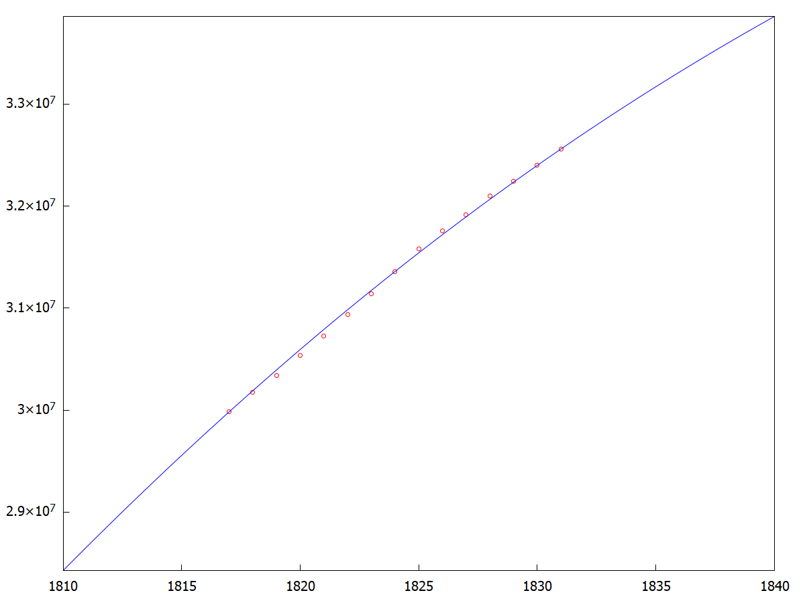
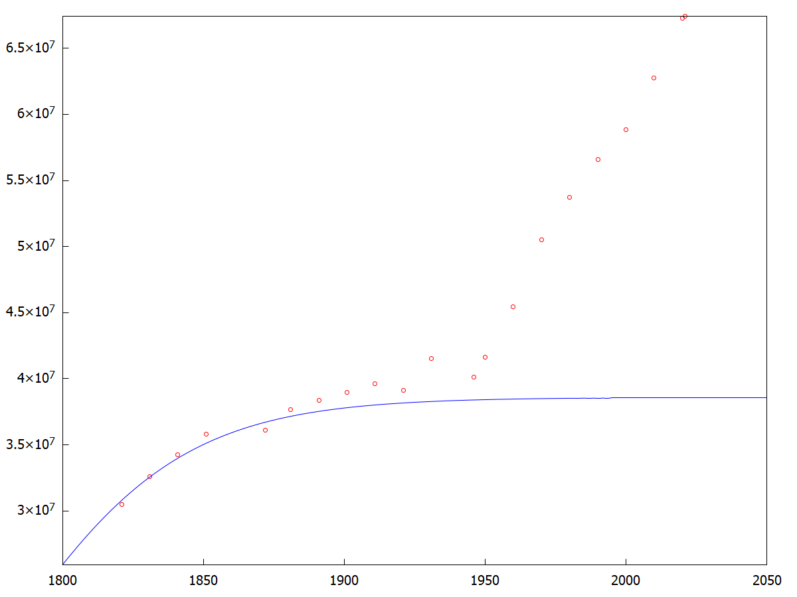

\( \DeclareMathOperator{\abs}{abs} \newcommand{\ensuremath}[1]{\mbox{$#1$}} \)
Ejercicio 1.1
| (%i3) |
Ano
:
[
1817 , 1818 , 1819 , 1820 , 1821 , 1822 , 1823 , 1824 , 1825 , 1826 , 1827 , 1828 , 1829 , 1830 , 1831 ] ; |
\[\operatorname{ }\left[ 1817\operatorname{,}1818\operatorname{,}1819\operatorname{,}1820\operatorname{,}1821\operatorname{,}1822\operatorname{,}1823\operatorname{,}1824\operatorname{,}1825\operatorname{,}1826\operatorname{,}1827\operatorname{,}1828\operatorname{,}1829\operatorname{,}1830\operatorname{,}1831\right] \]
| (%i4) |
Pobl
:
[
29981336 , 30177238 , 30339186 , 30539049 , 30727276 , 30939420 , 31138054 , 31359340 , 31579886 , 31755860 , 31913393 , 32102464 , 32241866 , 32402940 , 32560934 ] ; |
\[\operatorname{ }\]
| (%i5) | AnoPob : transpose ( matrix ( Ano , Pobl ) ) ; |
\[\operatorname{ }\begin{pmatrix}1817 & 29981336\\ 1818 & 30177238\\ 1819 & 30339186\\ 1820 & 30539049\\ 1821 & 30727276\\ 1822 & 30939420\\ 1823 & 31138054\\ 1824 & 31359340\\ 1825 & 31579886\\ 1826 & 31755860\\ 1827 & 31913393\\ 1828 & 32102464\\ 1829 & 32241866\\ 1830 & 32402940\\ 1831 & 32560934\end{pmatrix}\]
| (%i6) | V ( t , r , K , P0 ) : = − ( %e ^ ( r · ( t − 1817 ) ) · K · P0 ) / ( ( 1 − %e ^ ( r · ( t − 1817 ) ) ) · P0 − K ) ; |
\[\operatorname{ }\operatorname{V}\left( t\operatorname{,}r\operatorname{,}K\operatorname{,}\ensuremath{\mathrm{P0}}\right) \operatorname{:=}\frac{-{{\% e}^{r\, \left( t-1817\right) }} K\, \ensuremath{\mathrm{P0}}}{\left( 1-{{\% e}^{r\, \left( t-1817\right) }}\right) \, \ensuremath{\mathrm{P0}}-K}\]
| (%i7) | solve ( [ V ( 1817 , r , K , 29981336 ) = 29981336 ] , [ r , K ] ) ; |
\[\operatorname{ }\ensuremath{\mathrm{all}}\]
| (%i8) | solve ( [ V ( 1824 , r , K , 29981336 ) = 31359340 ] , [ r , K ] ) ; |
\[\operatorname{ }\left[ \left[ r=\ensuremath{\mathrm{\% r1}}\operatorname{,}K=\frac{235048727319560 {{\% e}^{7 \ensuremath{\mathrm{\% r1}}}}-235048727319560}{7495334 {{\% e}^{7 \ensuremath{\mathrm{\% r1}}}}-7839835}\right] \right] \]
| (%i9) | solve ( [ V ( 1831 , r , ( 235048727319560 · %e ^ ( 7 · r ) − 235048727319560 ) / ( 7495334 · %e ^ ( 7 · r ) − 7839835 ) , 29981336 ) = 32560934 ] , [ r ] ) ; |
\[\operatorname{ }\]
| (%i10) | R : log ( 13580235259 ^ ( 1 / 7 ) / 10903569446 ^ ( 1 / 7 ) ) ; |
\[\operatorname{ }\log{\left( \frac{{{13580235259}^{\frac{1}{7}}}}{{{10903569446}^{\frac{1}{7}}}}\right) }\]
| (%i11) | K : ( 235048727319560 · %e ^ ( 7 · R ) − 235048727319560 ) / ( 7495334 · %e ^ ( 7 · R ) − 7839835 ) ; |
\[\operatorname{ }\frac{146892328268425985}{3807151752}\]
| (%i13) | solve ( [ V ( 1824 , n , m , 29981336 ) = 31359340 , V ( 1831 , n , m , 29981336 ) = 32560934 ] , [ n , m ] ) ; |
\[\operatorname{ }[]\]
| (%i15) | V ( t , R , K , 29981336 ) ; |
\[\operatorname{ }-\frac{550503531204747205926995 {{\% e}^{\log{\left( \frac{{{13580235259}^{\frac{1}{7}}}}{{{10903569446}^{\frac{1}{7}}}}\right) } \left( t-1817\right) }}}{475893969 \left( 29981336 \left( 1-{{\% e}^{\log{\left( \frac{{{13580235259}^{\frac{1}{7}}}}{{{10903569446}^{\frac{1}{7}}}}\right) } \left( t-1817\right) }}\right) -\frac{146892328268425985}{3807151752}\right) }\]
| (%i16) | wxdraw2d ( color = red , point_type = circle , points ( AnoPob ) , color = blue , explicit ( V ( t , R , K , 29981336 ) , t , 1810 , 1840 ) ) ; |
\[\operatorname{ }\]
\[\operatorname{ }\]
| (%i17) | T : [ 1821 , 1831 , 1841 , 1851 , 1872 , 1881 , 1891 , 1901 , 1911 , 1921 , 1931 , 1946 , 1950 , 1960 , 1970 , 1980 , 1990 , 2000 , 2010 , 2020 , 2021 ] ; |
\[\operatorname{ }\left[ 1821\operatorname{,}1831\operatorname{,}1841\operatorname{,}1851\operatorname{,}1872\operatorname{,}1881\operatorname{,}1891\operatorname{,}1901\operatorname{,}1911\operatorname{,}1921\operatorname{,}1931\operatorname{,}1946\operatorname{,}1950\operatorname{,}1960\operatorname{,}1970\operatorname{,}1980\operatorname{,}1990\operatorname{,}2000\operatorname{,}2010\operatorname{,}2020\operatorname{,}2021\right] \]
| (%i18) |
P
:
[
30462000
,
32569000
,
34230000
,
35783000
,
36103000
,
37672000
,
38343000
,
38962000
,
39605000 , 39108000 , 41524000 , 40125230 , 41647258 , 45464797 , 50528219 , 53731387 , 56577000 , 58858198 , 62765235 , 67287241 , 67422241 ] ; |
\[\operatorname{ }\]
| (%i19) | TP : transpose ( matrix ( T , P ) ) ; |
\[\operatorname{ }\begin{pmatrix}1821 & 30462000\\ 1831 & 32569000\\ 1841 & 34230000\\ 1851 & 35783000\\ 1872 & 36103000\\ 1881 & 37672000\\ 1891 & 38343000\\ 1901 & 38962000\\ 1911 & 39605000\\ 1921 & 39108000\\ 1931 & 41524000\\ 1946 & 40125230\\ 1950 & 41647258\\ 1960 & 45464797\\ 1970 & 50528219\\ 1980 & 53731387\\ 1990 & 56577000\\ 2000 & 58858198\\ 2010 & 62765235\\ 2020 & 67287241\\ 2021 & 67422241\end{pmatrix}\]
| (%i20) | wxdraw2d ( color = red , point_type = circle , points ( TP ) , color = blue , explicit ( V ( t , R , K , 29981336 ) , t , 1800 , 2050 ) ) ; |
\[\operatorname{ }\]
\[\operatorname{ }\]
Created with wxMaxima.
The source of this Maxima session can be downloaded here.